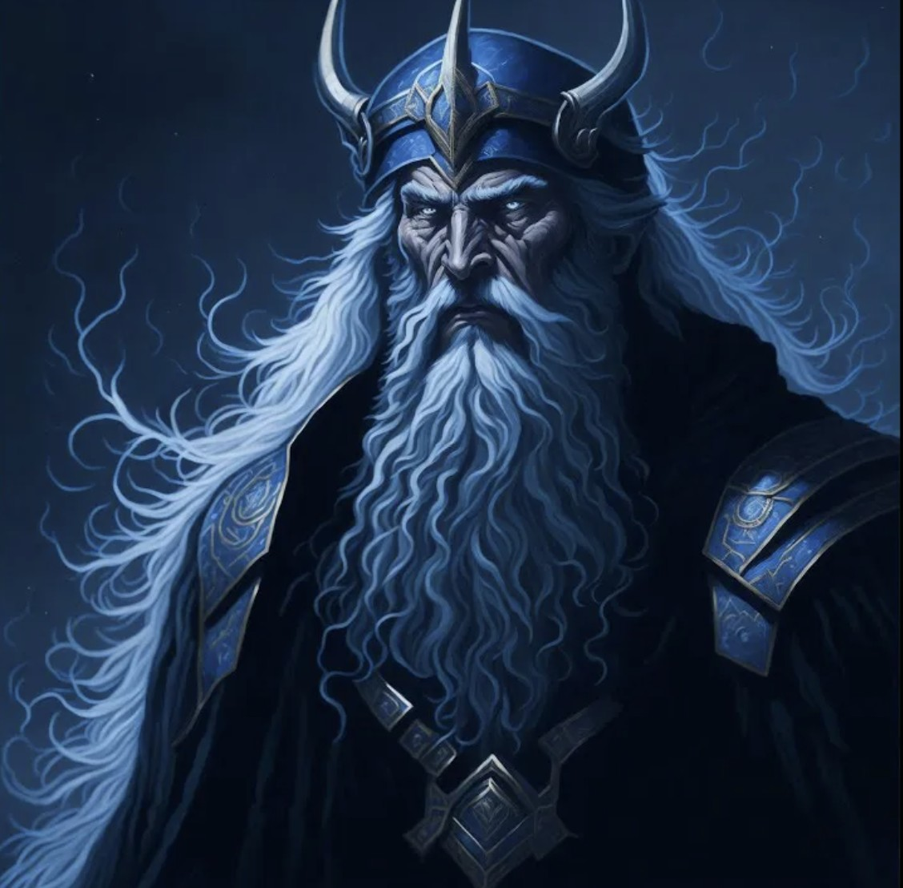
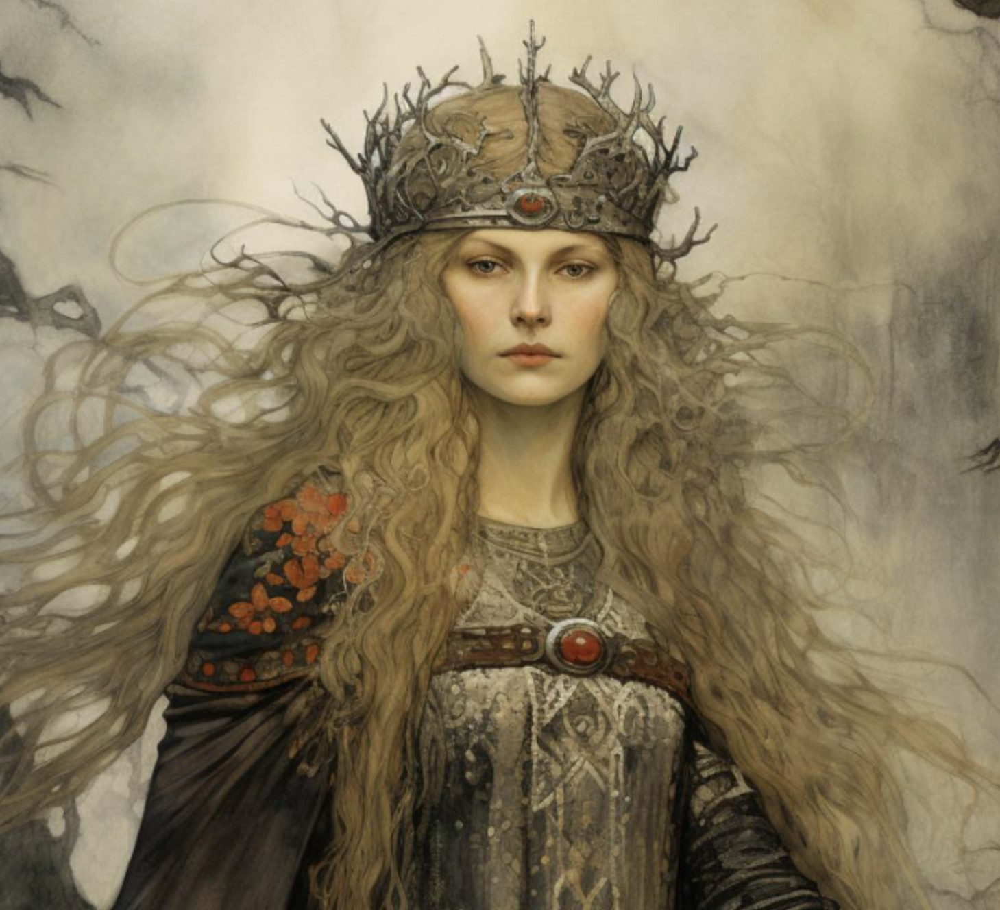
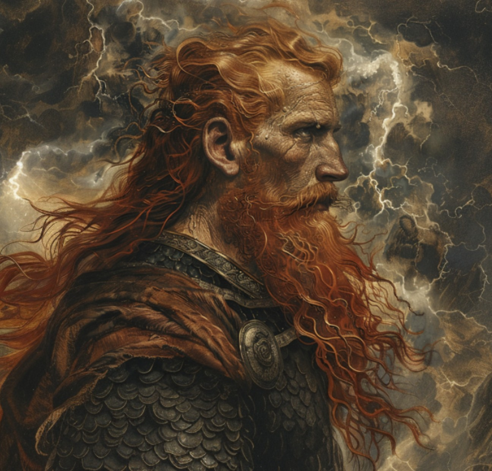
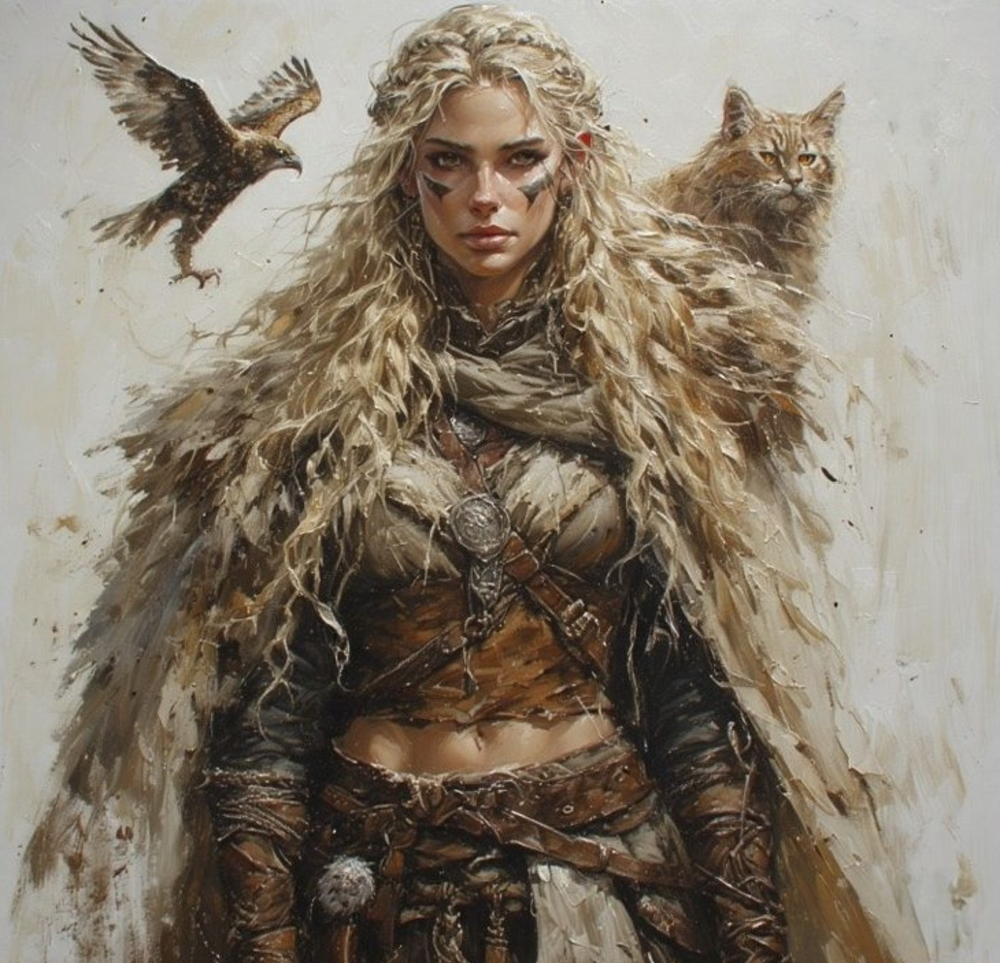
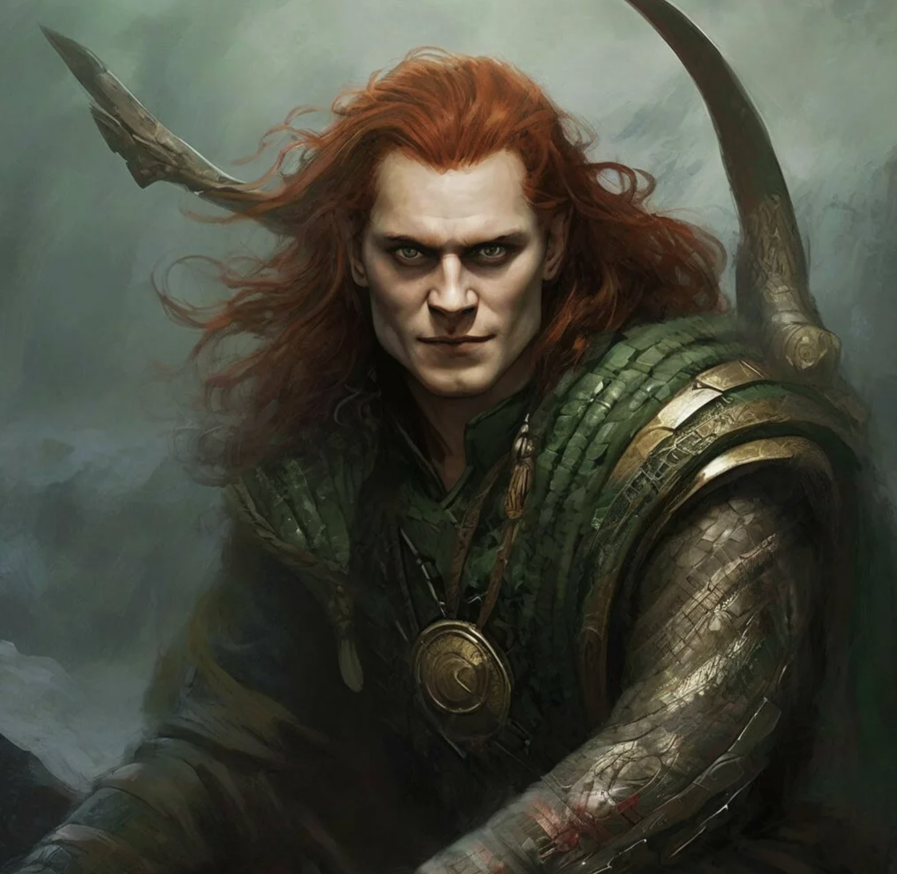
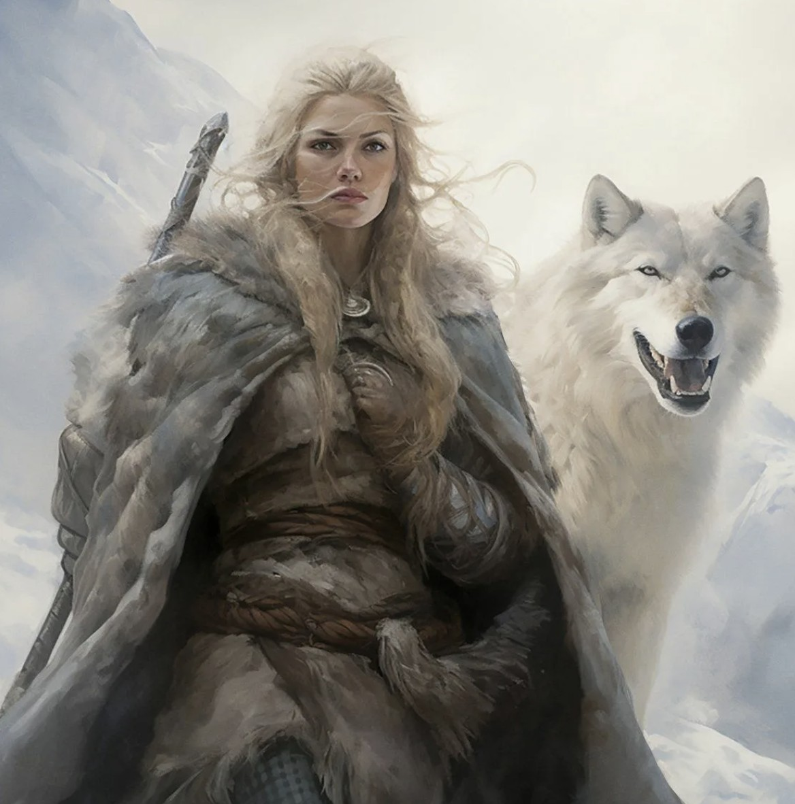
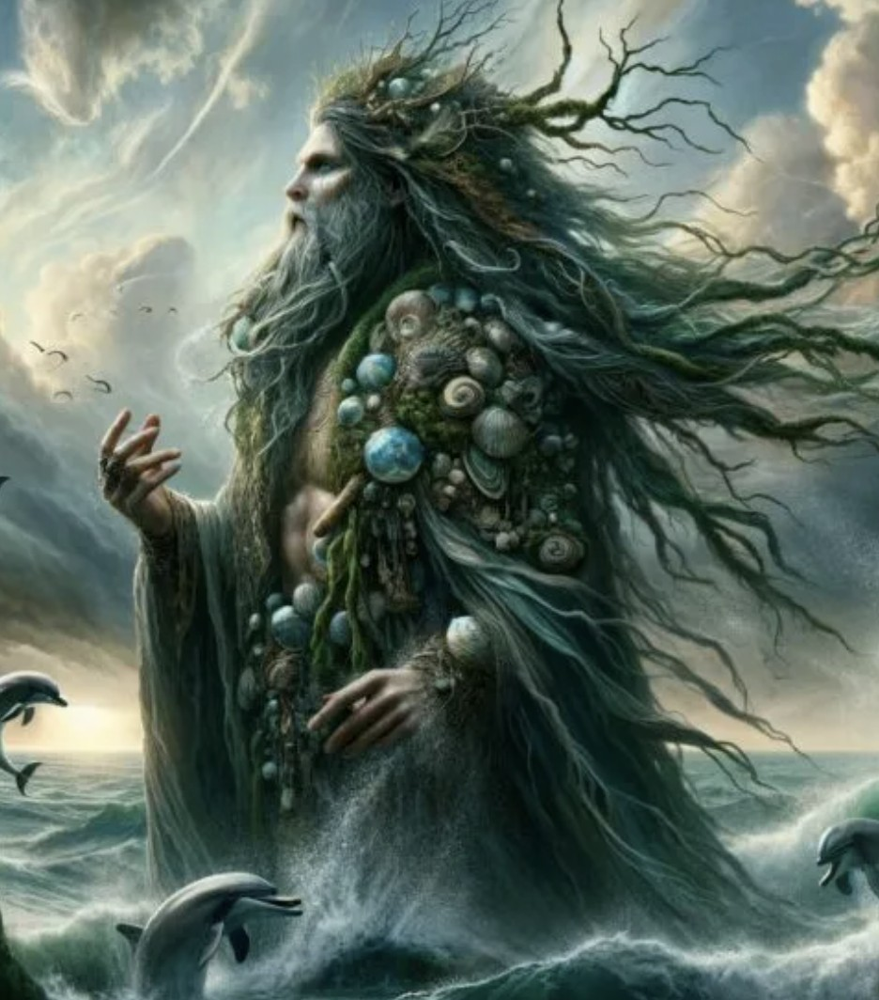
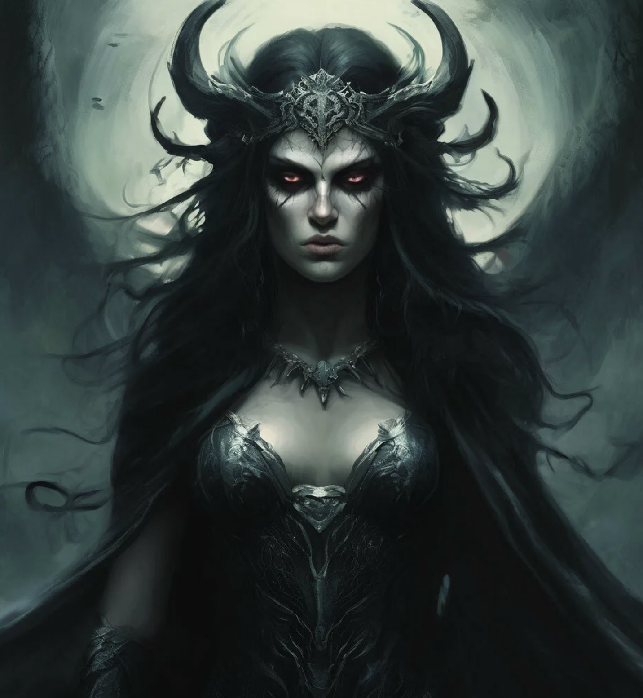
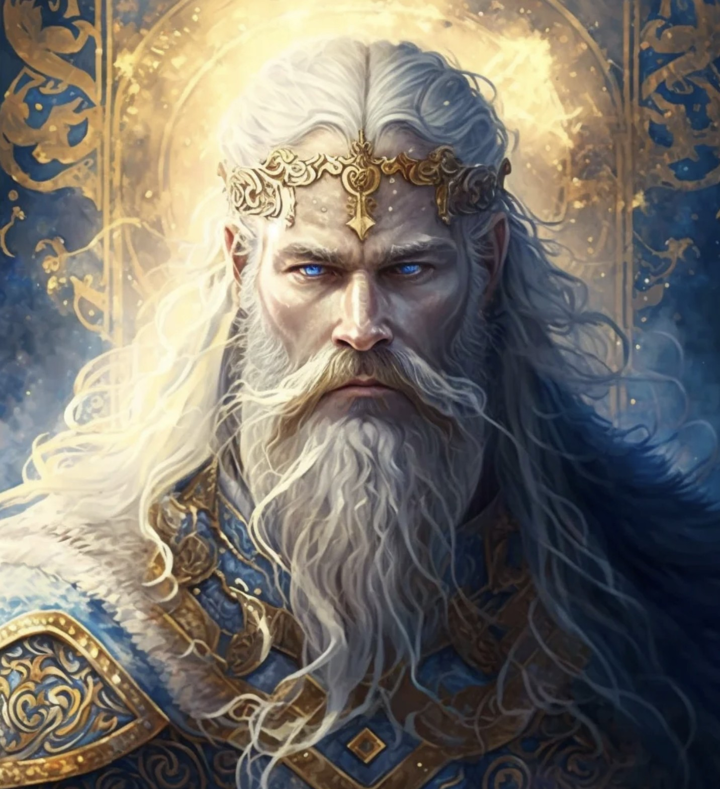

Скандинавская мифология, сформировавшаяся у германских племён Северной Европы, представляет собой сложную
иерархическую систему, в которой божества делятся на два основных рода: асов и ванов. Асы, во главе с верховным
богом Одином, обитали в Асгарде и олицетворяли силу, власть и войну. К ним относились такие ключевые фигуры, как
Тор — бог грома, защитник Мидгарда (мира людей) с его легендарным молотом Мьёльниром, хитрый и коварный Локи, а
также одноглазый Один — бог мудрости, поэзии и военной магии, пожертвовавший своим глазом ради знания.
Ваны, в отличие от воинственных асов, считались богами плодородия, природы и магии. Они жили в Ванахейме и
управляли такими стихиями, как земля, вода и богатство. Наиболее известные представители ванов — Ньёрд (бог моря
и ветра) и его дети, близнецы Фрейр (бог урожая и мира) и Фрейя (богиня любви и красоты). Противостояние между
асами и ванами завершилось мирным договором и обменом заложниками, что символизировало единство силы и природы в
скандинавском пантеоне.
Важной чертой скандинавских богов была их неабсолютность и смертность — в отличие от многих других мифологий,
они не были бессмертны и безупречны. Согласно пророчеству о Рагнарёке (гибели богов), им суждено пасть в великой
битве с великанами и чудовищами, после чего мир возродится заново. Эта обречённость придаёт образам
скандинавских божеств особый трагизм и глубину, подчёркивая героический идеал: даже зная о неизбежном конце, они
продолжают сражаться и выполнять свой долг.
| Картинка |
Название |
Характеристики |
Интересные факты |
 |
Один |
- Родовая принадлежность: Ас
- Сферы влияния: Война и победа, мудрость и знания, поэзия, магия, правитель и отец
- Личностные качества: Мудрость и прозорливость, хитрость, щедрость, жестокость, красноречивость
- Символы и атрибуты: Копье Гунгнир, вороны Хугин и Мунин, волки Гери и Фреки, Конь Слейпнир, один
глаз
- Место обитания: Вальхалла, Хлидскьяльв
|
- Он отдал глаз за мудрость. Один добровольно лишил себя глаза, чтобы напиться из источника
мудрости великана Мимира. С тех пор он носит шляпу или капюшон, чтобы скрыть пустую
глазницу.
- Его вороны — это Мысль и Память. Каждое утро два ворона — Хугин (мысль) и Мунин (память) —
облетают мир, а вечером шепчут Одину на ухо всё, что видели.
- Он добыл руны через пытку собой. Чтобы постичь тайну рун, Один пронзил себя собственным копьем и
провисел 9 дней и ночей на Мировом древе, принесенный в жертву самому себе.
|
 |
Фригг |
- Родовая принадлежность: Ас
- Сферы влияния: Брак и материнство, пророчество и судьба, домашнее хозяйство и ремесла, защита
детей
- Личностные качества: Мудрость и прозорливость, царственность, заботливость, строгость,
скрытность
- Символы и атрибуты: Прялка и веретено, соколиное оперение, ключи, Полярная звезда
- Место обитания: Фенсалир
|
- Она знала судьбу, но молчала. Фригг, как и Один, обладала даром пророчества и знала будущее
каждого человека и бога. Однако она никогда не раскрывала тайны, храня мудрое молчание.
- В её честь назвали пятницу. День недели Friday (пятница) в английском языке назван в честь Фригг
(Frigg's day), так как её считали покровительницей семьи и брака — идеальный день для свадеб.
- Она пряла облака. Фригг часто изображали с прялкой — считалось, что она прядет нити судьбы, а
облака в небе — это её спутанная кудель.
|
 |
Тор |
- Родовая принадлежность: Ас, но имеет смешанное происхождение
- Сферы влияния: Гром и молния, защитник Мидгарда и Асгарда, плодородие и освящение, сила и мощь
- Личностные качества: Героизм и отвага, прямодушие, надежность, богатырский аппетит и сила,
недалекость
- Символы и атрибуты: Молот Мьельнир, пояс силы, железные рукавицы, колесница с козлами, красная
борода
- Место обитания: Бильскирнир
|
- Его козлов можно есть сколько угодно. У Тора была волшебная колесница, запряженная двумя
козлами. Если Тор и его спутники голодали, он забивал козлов, варил и кормил всех мясом, но
строго наказывал не ломать кости. Наутро он освящал шкуры молотом Мьёльниром, и козлы оживали
целыми и невредимыми.
- Он был главным героем у простых людей. В отличие от сложного и хитрого Одина, которому
поклонялись конунги и ярлы, Тор был любимцем простых земледельцев и воинов. Его молот как оберег
носили на шее чаще, чем молотки для грома.
- Он не мог поднять свою кошку. Великаны решили испытать Тора и подсунули ему "кошку", которую
нужно было поднять. Тор смог оторвать от пола только одну лапу. На самом деле это был не кот, а
замаскированный Мировой Змей Ёрмунганд, опоясывающий всю Землю.
|
 |
Фрейя |
- Родовая принадлежность: Ван
- Сферы влияния: Любовь, красота и сексуальность, война и смерть, магия, плодородие и изобилие,
колдовство и пророчество
- Личностные качества: Страстность и свободолюбие, красота и гордость, воинственность, хитрость,
чувствительность
- Символы и атрибуты: Ожерелье Брисингамен, колесница с кошками, соколиное оперение, слезы-золото,
свинья Хильдисвини, имя "Ванадис"
- Место обитания: Фолькванг
|
- Она обучила Одина магии. Фрейя была великой колдуньей и первой среди богов освоила магию сейд
(шаманское искусство предсказания и изменения судьбы). Именно она обучила этим тайным знаниям
самого Одина.
- Она спала с четырьмя карликами ради ожерелья. Чтобы получить знаменитое золотое ожерелье
Брисингамен, Фрейя согласилась провести по ночи с каждым из четырех карликов-кузнецов, которые
его создали. Это не сделало ее менее почитаемой — красота и страсть считались ее божественной
прерогативой.
- Она плакала золотом. У Фрейи был муж по имени Од, который постоянно путешествовал. Когда Фрейя
тосковала по нему, она плакала, и ее слезы превращались в чистое золото или янтарь.
|
 |
Локи |
- Родовая принадлежность: он не является асом по происхождению, но живет среди них.
- Сферы влияния: Обманщик, источник конфликтов, помощник богов, отец чудовищ, разрушитель в
Рагнарек
- Личностные качества: Хитрость и изворотливость, обаяние и красноречие, зависть и злоба,
изменчивость, язык без костей
- Символы и атрибуты: Огонь, рыболовные сети, волшебные башмаки, дети, превращения
- Место обитания: Не имеет постоянного дома в Асгарде
|
- Он был побратимом Одина. Локи не просто жил среди богов — он заключил с Одином ритуал кровного
побратимства. Они смешали свою кровь и стали назваными братьями, поэтому асам было так сложно
изгнать его.
- Он стал матерью восьминогого коня. Локи превратился в кобылу, чтобы отвлечь жеребца великана,
строившего стену Асгарда. В итоге он забеременел и родил восьминогого жеребца Слейпнира, который
впоследствии стал верховым конем Одина.
- Он виновник первой смерти в Асгарде. Локи хитростью заставил слепого бога Хёда бросить ветку
омелы в светлого Бальдра, убив его. Это было первое убийство среди богов, которое запустило
цепочку событий, ведущих к Рагнарёку.
|
 |
Скадди |
- Родовая принадлежность: Етун.
- Сферы влияния: Зима и холод, охота и лыжи, горы, независимость и месть
- Личностные качества: Воинственность и отвага, гордость и независимость, суровость и
сдержанность, непримиримость
- Символы и атрибуты: Лук и стрелы, лыжи, горные вершины и снег, волки, змея в качестве оружия
- Место обитания: Трюмхейм
|
- Она выбирала мужа по ногам. В качестве откупа за смерть отца Скади разрешили выбрать мужа среди
богов, но смотреть можно было только на ноги. Она выбрала самые красивые ноги, надеясь, что они
принадлежат светлому Бальдру, но они оказались ногами морского бога Ньёрда.
- Их брак с Ньёрдом провалился из-за климата. Скади (гористая зима) и Ньёрд (морское побережье)
пытались жить вместе, но не выдержали: она не спала от криков чаек у моря, он — от воя волков в
горах. Они разошлись.
- Она пришла в Асгард с оружием мстить. Когда боги убили её отца, великана Тьяцци, Скади надела
доспехи, взяла лук и отправилась в Асгард требовать кровной мести. Боги, впечатлённые её
смелостью, предпочли договориться миром.
|
 |
Ньерд |
- Родовая принадлежность: Ван.
- Сферы влияния: Море и мореплавание, богатство и торговля, ветер и погода, плодородие
- Личностные качества: Миролюбие и мудрость, уравновешенность, щедрый
- Символы и атрибуты: Корабль и весла, волны и ветер, морские птицы, изобилие и богатство,
прибрежные скалы и заливы
- Место обитания: Ноатун
|
- Его дети стали знаменитее отца. Несмотря на его собственное величие, его дети — близнецы Фрейр и
Фрейя — стали гораздо более известными и почитаемыми, затмив отца в мифах и культах.
- Он был заложником мира. После войны между асами и ванами Ньёрда вместе с детьми (Фрейром и
Фрейей) отправили к асам в качестве заложника. Там его приняли с почетом, и он стал полноправным
богом Асгарда.
- Он управлял ветрами и морем. Моряки и рыбаки молились именно Ньёрду. Он посылал попутный ветер,
успокаивал штормы и даровал богатый улов.
|
 |
Хель |
- Родовая принадлежность: Етун.
- Сферы влияния: Смерть и загробный мир, прием и распределение душ, граница между мирами,
правосудие
- Личностные качества: Справедливость и беспристрастность, суровость и холодность, честность,
отчужденность
- Символы и атрибуты: Трон "Болезнь", тарелка "Голод" и нож "Изнурение", слуги Ганглати и Ганглот
- Место обитания: Хельхейм
|
- Один сам назначил ее правительницей. Когда боги узнали о детях Локи, Один не стал убивать Хель,
а отправил ее в нижний мир, поставив владычицей над девятью мирами мертвых. Так она получила
свою власть.
- Она наполовину синяя (или мертвая). Главная особенность внешности Хель — она разделена на две
половины: одна половина ее тела — нормальная, живая, а другая — синяя, черная или цвета трупа,
как у мертвеца.
- Она не злая, а просто справедливая. Хель не мучает души умерших специально. Она просто
беспристрастно правит своим царством, куда попадают все, кто не погиб в бою. Она не знает
жалости, но и не творит произвол.
|
 |
Форсети |
- Родовая принадлежность: Ас.
- Сферы влияния: Правосудие и справедливость, примирение, законы и порядок, народные собрания
- Личностные качества: Мудрость и рассудительность, спокойствие и невозмутимость, честность,
миролюбие, молчаливочть и внимательность
- Символы и атрибуты: Золотой топор, судейское кресло, весы правосудия, свет и ясность
- Место обитания: Глитнир
|
- Он разрешал споры, не прибегая к насилию. Форсети был главным судьей Асгарда. Любой спор,
который доходил до его чертога, заканчивался миром — он умел примирить даже заклятых врагов.
- Он почти не появляется в мифах. Форсети — один из самых загадочных богов. У него практически нет
своих мифов и приключений, потому что его роль судьи не предполагает путешествий и битв — он
всегда восседает в своем сияющем чертоге и вершит правосудие.
- Его чертог сделан из серебра и золота. Зал Форсети называется Глитнир ("Сияющий") — у него крыша
из чистого серебра, а колонны и стены из красного золота. Этот блеск символизирует свет истины и
справедливости.
|
Автор: Коваленко Олеся Викторовна